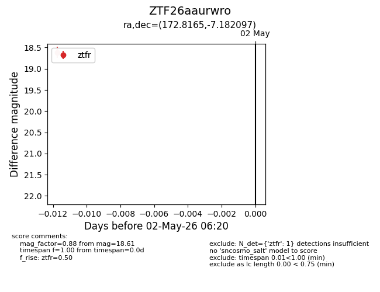
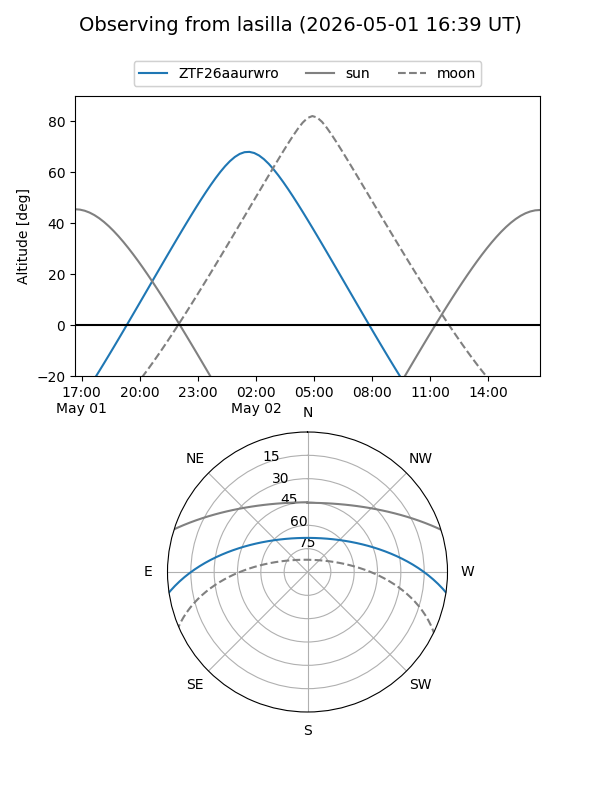
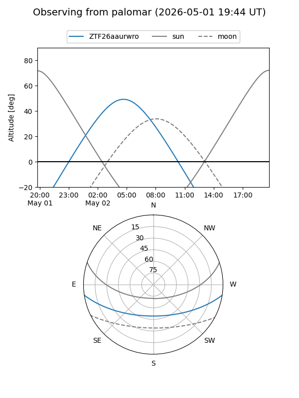

ZTF26aaurwro
Target ZTF26aaurwro at 2026-05-02 06:30
Aliases and brokers:
FINK: link
Lasair: link
ALeRCE: link
alt names
ZTF26aaurwro (ztf,fink_ztf)
Coordinates:
equatorial (ra, dec) = 172.8165,-7.18210
equatorial (HMS+DMS) = 11:31:15.96,-07:10:55.55
galactic (l, b) = (270.5544,+50.58054)
Flags:
Photometry:
last ztfr=18.61
1 ztfr detections
Lightcurve

Visibility


Additional plots